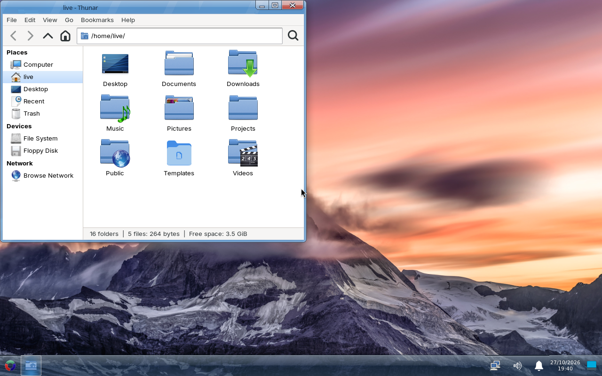

Linux for people who just want their computer to work.
Chamesle is an independent desktop Linux distro. You boot it, it looks like what you're used to, and you get apps from Flathub without hunting around. If you like poking at things there's a full package manager underneath, but you never have to touch it.
Get Chamesle "Margit" Xfce, MATE, Cinnamon and GNOME editions, 64-bit, about 2 GB
new in 0.2 an installer with dual boot, the Chamesle Store, MATE and Cinnamon editions, and .deb/.rpm files that install with a double-click. What's new

What you get
Out of the box: Firefox, a file manager, Flathub already set up, printing, Bluetooth, Wi-Fi, and the firmware and drivers most laptops need. There's an installer that sets it up next to Windows if you like, an app store, and a driver manager for NVIDIA cards and the like.
Under the hood it uses dinit to start things, so it boots fast and doesn't get in your way. There's no telemetry. There's no account to sign into.
Stable rolling. Updates come every week, so your apps are always recent, but nothing new goes out until it has been around for a while and a test install still boots. The kernel stays on the long-term support line. Learned Linux on Mint? Chamesle is where you learn what rolling feels like, without the surprises.
Any .deb, any .rpm
Found an app that only offers a download for Ubuntu or Fedora? Double-click it anyway. pkgimport
turns .deb and .rpm files into Chamesle packages and installs them with everything
they need. Your app is in the menu a moment later.
sudo pkgimport install ~/Downloads/app.debLooks familiar
Start menu in the corner, taskbar along the bottom, clock on the right. The Windows key opens the menu. You don't have to learn anything to get going.
One store for everything
The Chamesle Store puts Flathub and the Chamesle repo in one window. Search, click Install, done. Updates for both are one button.
Lots of software
Everything on Flathub, plus almost 15,000 packages in our own repo, from GIMP and LibreOffice to compilers and server stuff.
Runs on old stuff
The Xfce edition is happy with 2 GB of RAM, and MATE is lighter still, for really old machines.
Where it's at
0.3.0 is out: Xfce, MATE and Cinnamon set up like Windows, and now GNOME, with a store, an update notifier
and a driver manager. Already running Chamesle? sudo apk upgrade brings you to 0.3.0. The
roadmap has what's next, and what's new has the latest.